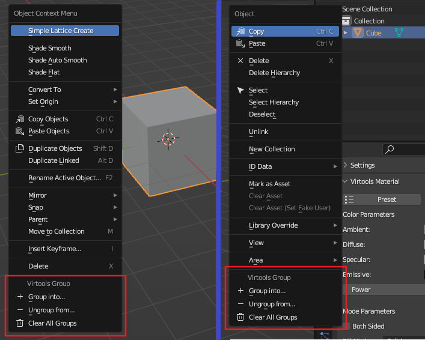

按组操作
按组选择
Ballance - Select by Virtools Group提供了一种按照Virtools归组数据进行筛选的功能。
该功能首先有5种不同的选择策略，与Blender的选择方法完全匹配（开始、扩选、相减、反转、相交）。只需像Blender选择那样使用它。然后，选择你需要的组的名称，然后开始一次选择或筛选。
关于模式选择
如果可以，请尽可能使用相减或相交模式。因为这样可以避免分析过多的物体。例如先选定一个大致的范围，然后使用相交模式过滤，比直接使用开始模式效率更高。
快速归组
BBP插件在2个地方添加了为物体快速归组的功能。首先是物体上下文菜单：你可以选择一系列物体，然后右键，在物体上下文菜单中找到快速归组功能。其次是大纲视图中的物体菜单：你可以在大纲窗口中，右键选择的物体，找到快速归组功能。两者菜单如下图所示。

Group into...
把选择物体归入你选择的组。
Ungroup from...
把选择物体从你选择的组中取消归组。
Clear All Groups
清空选择物体的所有归组信息。执行前会让你确认以免误操作。